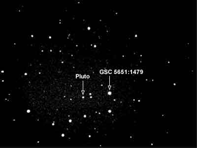

← Images archive
Pluto
Movement of Pluto 15th June - 17th June 2002.
Pluto - 15th June, 2002 12:40 UTC.
Pluto - 17th June, 2002 12:17 UTC (approximately 48 hours later)
Telescope + Camera: 10 inch SCT + ST237-A at F/3.75 Bin 2x2 Resolution: Approximately 2.98 arc seconds / pixel Field Size: 16.3 arc minutes x 12.2 arc minutes. Exposure: 120 seconds The 'bright' star near centre (GSC5651:1479) is magnitude 11.

